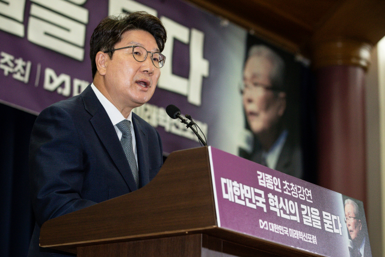

민주 "7월 임시국회 소집할 것"…의장단 단독 선출 가능성 시사
발언하고 있다. 연합뉴스
더불어민주당이 평행선을 달리는 원구성 협상의 책임을 국민의힘에 돌리면서 7월 임시국회 중 국회의장단 단독 선출 가능성을 27일 시사했다.
박홍근 원내대표는 이날 오후 국회에서 기자간담회를 열고 "국회 정상화에는 손톱만큼의 진정성도 없고 어떻게 하면 야당을 궁지로 내몰 것인지 정략에 몰두하는 대통령과 여당을 마냥 믿고 기다릴 수 없다"며 "금명간 7월 임시국회를 소집해 국회를 정상화하고 민생 현안과 인사청문회를 챙기겠다"고 말했다.
사실상 민주당 단독으로 의장단을 선출하고 원구성에 나서겠다는 뜻으로 해석된다.
민주당의 이 같은 초강경책은 이날 오전 권성동 국민의힘 원내대표가 민주당의 사법개혁특별위원회 구성 요구를 완강히 거부하고 의장단 및 여당 몫 법사위원장 우선 선출을 역제안한 데 따른 것으로 보인다.
앞서 권 원내대표는 최고위원회의에서 "민주당이 진심으로 법사위원장을 국민의힘에 반환할 생각이라면 본회의를 열어 국회의장단과 법사위원장을 먼저 선출할 것을 제안한다"고 말했다. 이어 사개특위 구성과 관련해 "민주당은 원구성 협상에 '검수완박'(검찰 수사권 완전 박탈) 악법을 끼워팔기 하고 있다"며 "국회 사법개혁특위를 구성하고 헌법재판소 제소를 취소하는 조건은 수용 불가"라고 강조했다.
이에 대해 박 원내대표는 "결국 오늘 오전 국민의힘 권성동 원내대표의 공개 발언을 통해 확인한 것은 이 상황을 타개할 의지도, 의사도 없다는 것"이라며 "국정 운영에 무한책임을 져야 하는 입장인 여당의 자세인지 묻지 않을 수 없다"고 목소리를 높였다.
그러면서 "더는 국회의 공백, 공전 사태는 마냥 지켜볼 수 없다. 7월 1일부터는 국회가 문을 열어야 한다"며 "시급한 인사청문회와 주요 민생입법 성과를 내야 하고 절차를 이행해야 한다는 입장을 분명히 갖게 됐다"고 덧붙였다.

축사하고 있다. 연합뉴스